1.5.2.3.1 OpenSearch 사용 환경 구성하기
OpenSearch와 OpenDashboards는 2021년에 ElasticSearch와 Kibana에서 포크되어 별도 오픈소스 프로젝트로 운영되고 있습니다. OCI OpenSearch는 OCI에서 제공하는 관리형 서비스입니다.
OCI Search 서비스 사용을 위한 Policy 설정하기
OCI Search 서비스 권한 부여하기
Allow service opensearch to manage vnics in compartment <compartment_name>
Allow service opensearch to use subnets in compartment <compartment_name>
Allow service opensearch to use network-security-groups in compartment <compartment_name>
Allow service opensearch to manage vcns in compartment <compartment_name>
오라클 클라우드 콘솔에서 OCI Search 서비스 관리 권한 부여하기
-
사용자가 속한 그룹이 SearchOpenSearchAdmins인 경우 예시
Allow group SearchOpenSearchAdmins to manage opensearch-family in compartment <compartment_name>
OCI OpenSearch 클러스터 만들기
-
오라클 클라우드 콘솔에 로그인합니다.
-
좌측 상단 햄버거 메뉴에서 Databases > OpenSearch > Clusters 로 이동합니다.
-
클러스터 생성을 위해 Create Cluster 버튼을 클릭합니다.
-
생성할 compartment 위치 및 이름, 버전을 선택합니다.
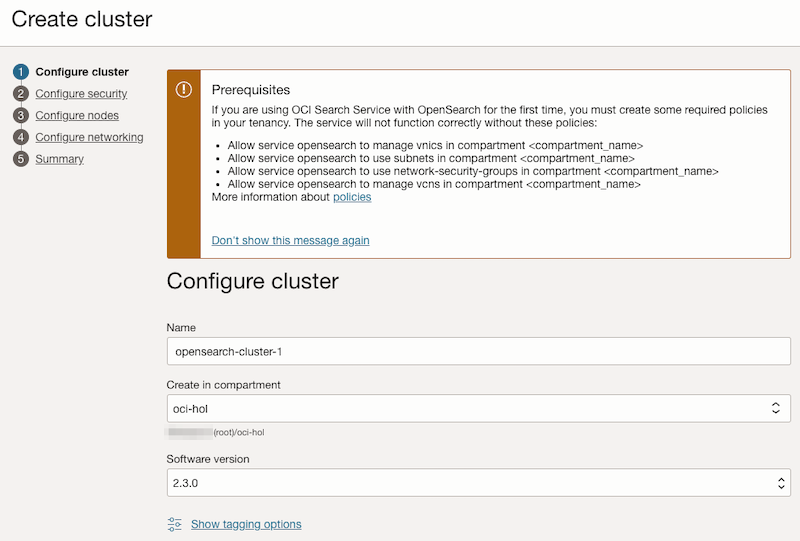
-
클러스터의 Primary Account의 유저, 패스워드를 입력합니다.
- username으로 admin은 사용할 수 없습니다.
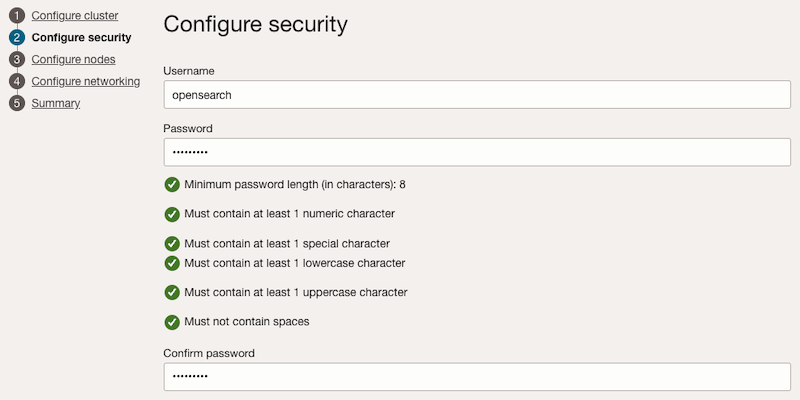
-
생성할 노드 구성을 선택합니다. 세 가지 구성이 가능하며, 여기서는 Development 구성을 선택합니다.
- Development: 1 마스터 노드, 1 데이타 노드, 1 OpenSearch 대쉬보드 노드
- Application Search, Log Analytics: 3 마스터 노드, 3 데이타 노드, 3 OpenSearch 대쉬보드 노드
- 구성을 선택후 노드 크기는 모두 수정할 수 있습니다. 또한 클러스터 생성이후에 크기를 변경할 수 있습니다.
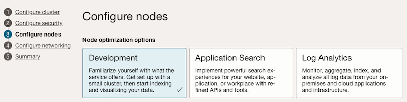
-
클러스터가 사용할 서브넷을 설정합니다. 여기서는 OKE 클러스터 생성시 이미 만들어진 VCN과 서브넷을 편의상 선택하였습니다.
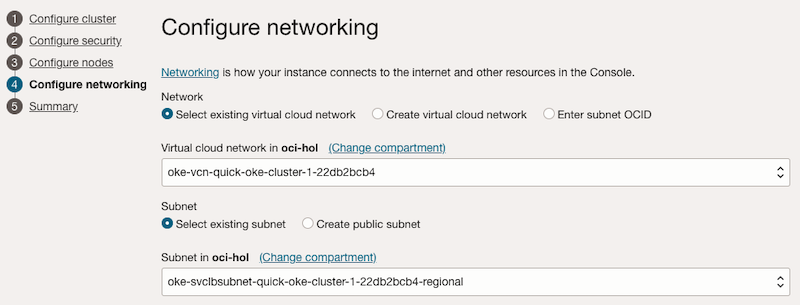
-
선택할 구성 정보를 확인하고 클러스터를 생성합니다.
-
Development 구성기준으로 테스트 날짜기준, 생성시간은 20분 가량이 소요되었습니다.
-
생성된 클러스터 정보
- 클러스터 정보에서 보듯에 OpenSearch와 OpenSearch Dashboard 모두 Private IP와 Private FQDN만 있습니다. 2023년 4월중순 기준으로 아직 Public IP는 지원하지 않습니다.
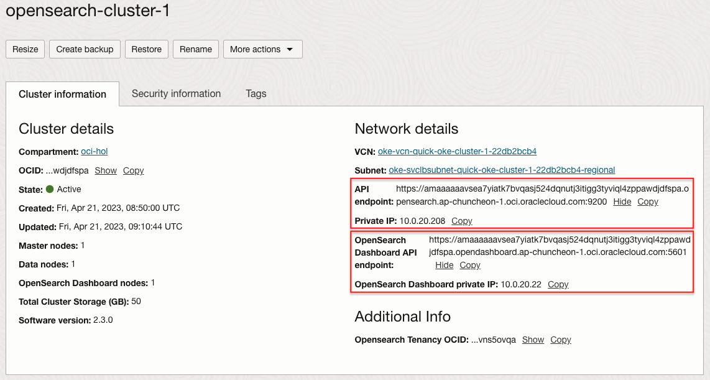
-
클러스터의 OpenSearch API Endpoint, Private IP와 OpenSearch Dashboard의 API Endpoint 및 private IP를 확인합니다.
-
기존 버전 사용자 참고사항
-
2022년 9월 15일 부로 Endpoint 도메인이 oci.oracleiaas.com에서 oci.oraclecloud.com으로 변경되었습니다. 그리고 인증서도 Self-Signed 인증서에서 DigiCert 인증서로 변경되었습니다. 그래서 더 이상 Self-Signed 인증서를 API 호출시 클라이언트 추가해 주지 않아도 됩니다.
-
2022년 9월 15일 전에 생성한 클러스터, Endpoint 도메인이 oci.oracleiaas.com로 끝나는 경우 연동절차는 이전 문서를 참고하세요.
-
-
인증 정보
- 2023년 2월 기준으로 OCI Search with OpenSearch now supports role-based access control 기능 출시로 인해 권한 설정 부분이 추가 되었습니다. 그래서 OCI 콘솔에서 OpenSearch Cluster를 생성하게 되면, 기본적으로 ENFORCE 모드로 생성됩니다.
- ENFORCE 모드에서는 OpenSearch API 호출시에 사용자 인증이 필요합니다.
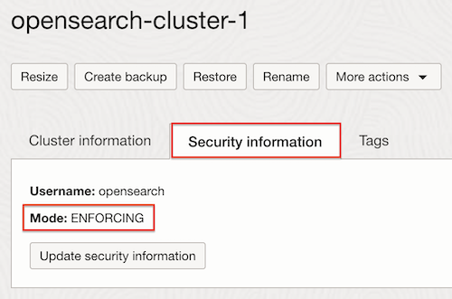
클러스터 연결 - JumpBox을 통한 Port Forwarding으로 연결하기
JumpBox VM 만들기
OpenSearch Dashboard는 현재 Public IP를 지원하지 않습니다. OpenSearch Dashboard를 접근을 위해 Public IP를 보유한 JumpBox VM를 추가로 생성합니다.
-
오라클 클라우드 콘솔, 좌측 상단 햄버거 메뉴에서 Compute > Instances로 이동합니다.
-
새로 Compute VM를 만듭니다.
-
Name: 예) jumpbox
-
Networking: 생성한 OpenSearch 클러스터에 접근이 가능한 VCN, Public Subnet을 선택하고 Public IP를 할당합니다.
예) 여기서는 생성한 OpenSearch 클러스터와 동일한 네트워크를 사용하였습니다.
-
-
생성한 jumpbox VM에 접근할 수 있도록, jumpbox VM에서 OpenSearch에 접근 할 수 있도록 서브넷의 보안규칙을 추가합니다.
-
아래 예시는 jumpbox 서브넷(10.0.30.0/24) 에서 OpenSearch가 위치가 서브넷인 10.0.20.0/24인 경우
-
jumpbox 서브넷(10.0.30.0/24)
- Ingress Rules
Stateless Source IP Protocol Source Port Range Destination Port Range Description No 0.0.0.0/0 TCP All 22 SSH - Egress Rules
Stateless Destination IP Protocol Source Port Range Destination Port Range Description No 10.0.20.0/24 TCP All 5601 OpenSearch Dashboard -
OpenSearch 서브넷(10.0.20.0/24)
- Ingress Rules
Stateless Source IP Protocol Source Port Range Destination Port Range Description No 10.0.30.0/24 TCP All 5601 OpenSearch Dashboard
-
OpenSearch Dashboard 접속확인
-
SSH 터널링을 통해 jumpbox VM을 통해 OpenSearch Dashboard를 접속합니다.
- OpenSearch Cluster정보 기준, OpenSearch Dashboard private ip가 10.0.20.22인 경우
ssh -L 5601:10.0.20.22:5601 opc@jumpbox -
SSH 터널링이 되어 있으므로, 로컬에서 브라우저로 OpenSearch Dashboard에 접속을 확인합니다.
-
접속주소: https://localhost:5601
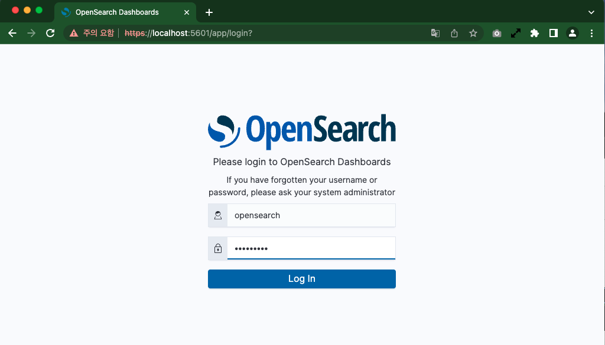
-
설치시 입력한 사용자 정보로 로그인합니다.
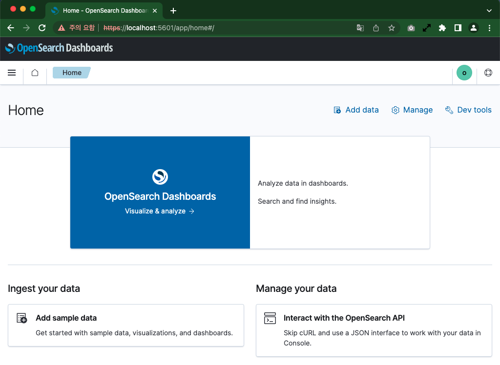
-
클러스터 연결 - Public Load Balancer로 연결하기
-
OCI 콘솔에서 내비게이션 메뉴를 엽니다. Networking > Load Balancers 항목으로 이동합니다.
-
Create Load Balancer 클릭합니다.
-
Load Balancer 를 타입을 Load balancer로 선택합니다.
-
기본 생성정보 입력
-
Name: Load Balancer 이름 입력, 예) lb-for-opensearch
-
Choose visibility type: 여기서는 Public 선택
-
Public IP 종류와 Bandwidth는 원하는 값으로 선택합니다.
-
Choose Networking: Load Balancer가 위치할 VCN과 Public Subnet 선택
-
-
Backend 설정
-
Load Balancing Policy: 기본값을 사용합니다..
-
Add Backend: 지금은 Compute 인스턴스만 추가할 수 있으므로, 여기서는 추가하지 않습니다.
-
Health Check Policy: 생성된 OpenSearch DashBoard가 https에, 5601 포트를 사용하므로 그에 맞게 아래와 같이 설정합니다.
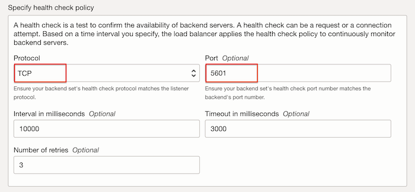
-
나머지 항목은 기본값을 사용합니다.
-
-
Configure Listener
-
Listener Name: 이름 입력
-
Specify the type of traffic your listener handles: TCP 선택
- 생성된 OpenSearch DashBoard가 https에, 5601을 사용합니다. 요청을 그대로 포워드 합니다. 요청을 그대로 포워드 하기 위해 TCP, 5601 포트로 설정합니다.
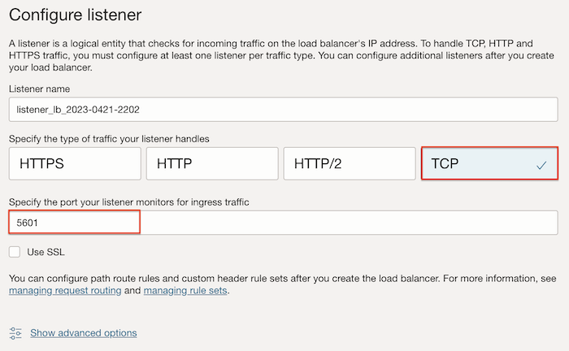
-
-
Manage logging
- 에러 로그와 액세스 로그를 OCI Log 서비스를 사용하도록 설정할 수 있습니다. 일단 여기서는 사용하지 않습니다.
-
Submit을 클릭하여 Load Balancer를 생성합니다.
-
생성이 완료되면, Resources > Backend sets을 클릭합니다.
-
기본적으로 생성된 backend set을 클릭합니다.
-
Resources > Backends로 이동하여, Add backends를 클릭합니다.
-
IP addresses 방식을 체크하고, 직접 IP를 입력합니다.
-
생성된 OpenSearch 상세 화면에서 확인한 DashBoard의 IP, 즉 OpenSearch Dashboard private ip를 입력하여 추가합니다.
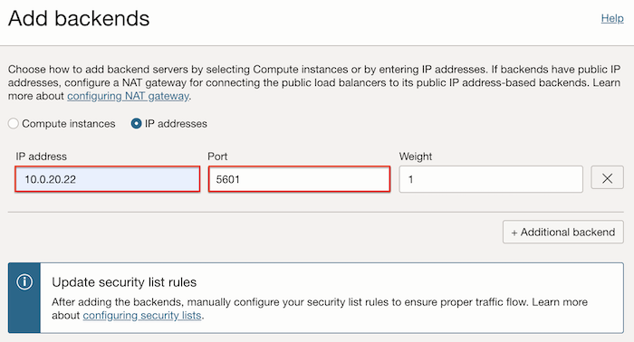
-
추가된 backend을 통해 헬스 체크가 완료될 때까지 기다립니다.
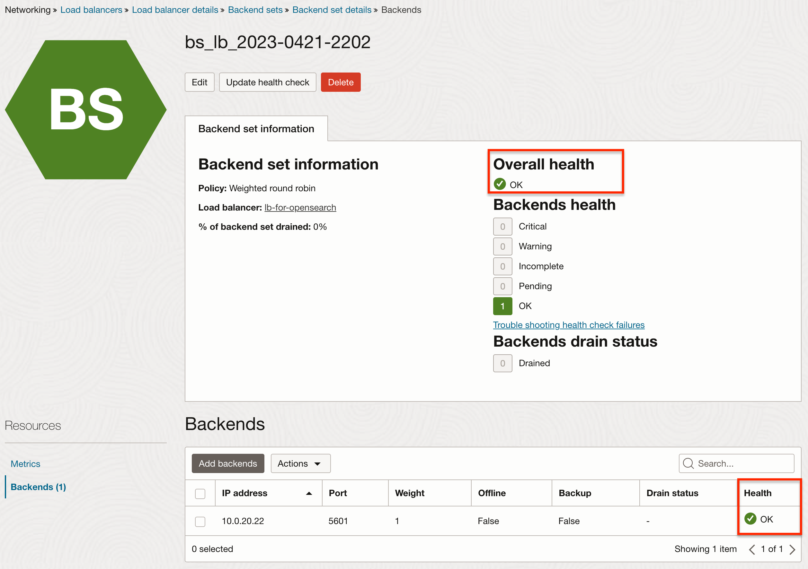
-
생성한 Load Balancer를 위해 보안규칙을 추가합니다.
-
아래 예시는 Load Balancer 서브넷(10.0.30.0/24) 에서 OpenSearch가 위치가 서브넷인 10.0.20.0/24인 경우
-
Load Balancer 서브넷(10.0.30.0/24)
- Ingress Rules
Stateless Source IP Protocol Source Port Range Destination Port Range Description No 0.0.0.0/0 TCP All 5601 OpenSearch Dashboard - Egress Rules
Stateless Destination IP Protocol Source Port Range Destination Port Range Description No 10.0.20.0/24 TCP All 5601 OpenSearch Dashboard -
OpenSearch 서브넷(10.0.20.0/24)
- Ingress Rules
Stateless Source IP Protocol Source Port Range Destination Port Range Description No 10.0.30.0/24 TCP All 5601 OpenSearch Dashboard
-
-
설정한 Load Balancer의 Public IP를 확인하여, 아래 주소로 브라우저에서 접속합니다.
- https://{Load Balancer Public IP}:5601
-
접속 주소가 인증서에 등록된 주소가 아닌, IP로 접속해서 보안 경고가 발생하지만, 그대로 접속합니다.
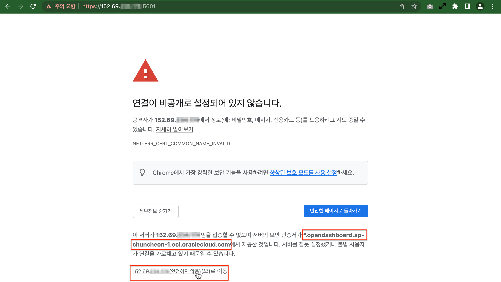
-
잘 접속되는 것을 볼 수 있습니다.
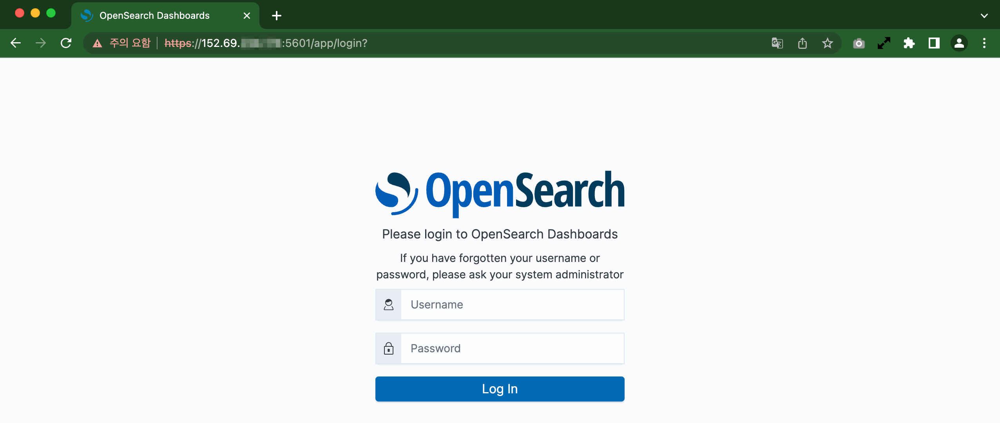
-
보안 경고가 싫은 경우 클라이언트 hosts 파일에 아래와 같이 추가합니다.
- *.opendashboard.ap-chuncheon-1.oci.oraclecloud.com와 같이 와일드카드 인증서를 사용하고 있으므로, 등록할 호스트명은 원하는 것으로 설정해도 됩니다.
# Linux/Mac의 경우 /etc/hosts 파일에 추가 # Windows의 경우 C:\Windows\System32\drivers\etc\hosts 파일 추가 152.69.xxx.xxx opensearch-cluster-1.opendashboard.ap-chuncheon-1.oci.oraclecloud.com- 등록한 전체 이름으로 다시 접속합니다. 보안 경고 없이 연결되는 것을 볼 수 있습니다.
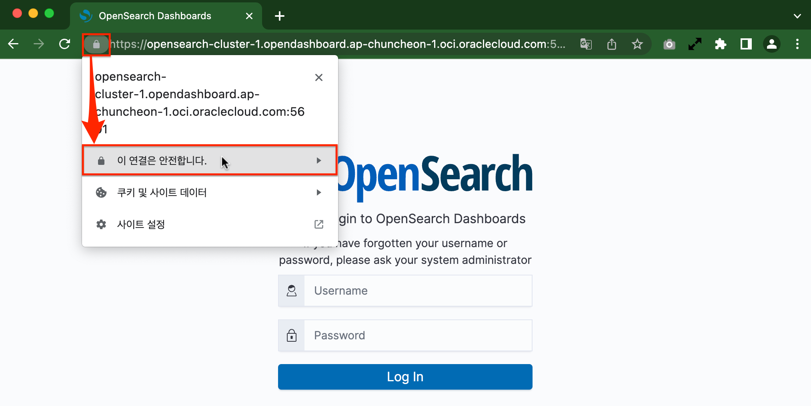
이 글은 개인으로서, 개인의 시간을 할애하여 작성된 글입니다. 글의 내용에 오류가 있을 수 있으며, 글 속의 의견은 개인적인 의견입니다.